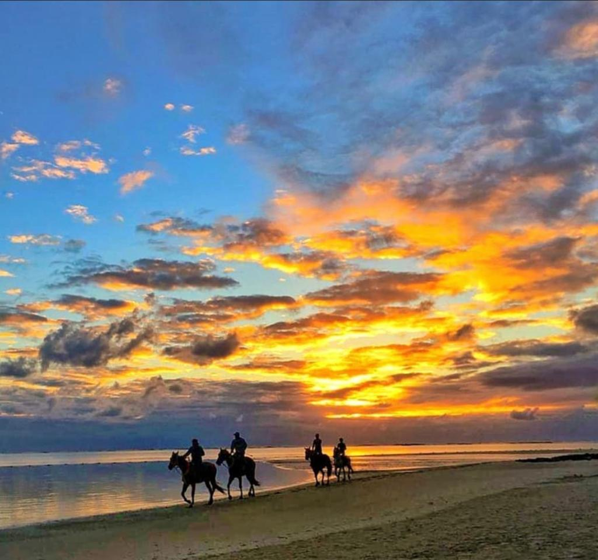
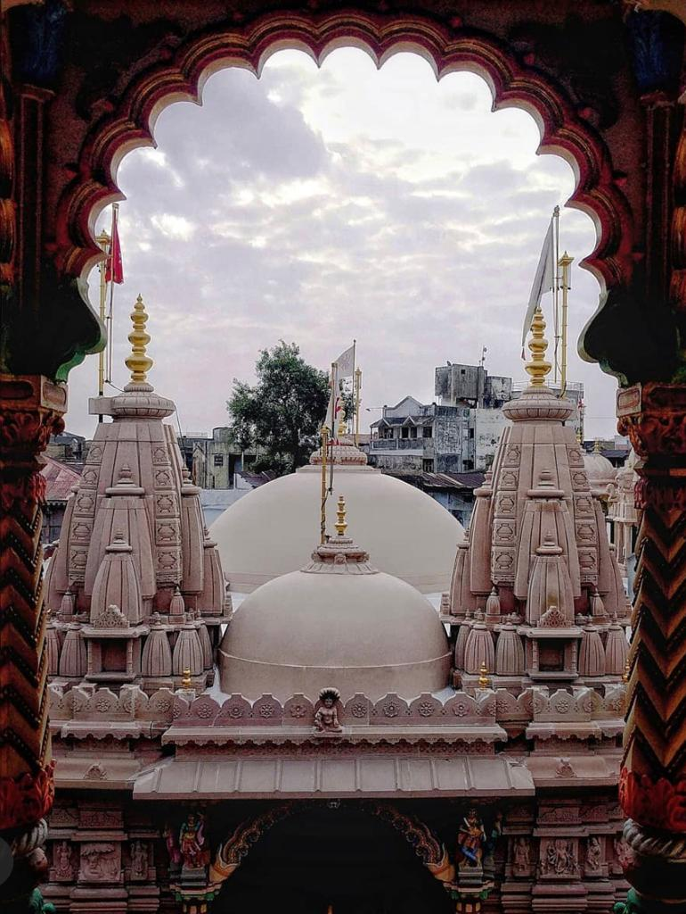
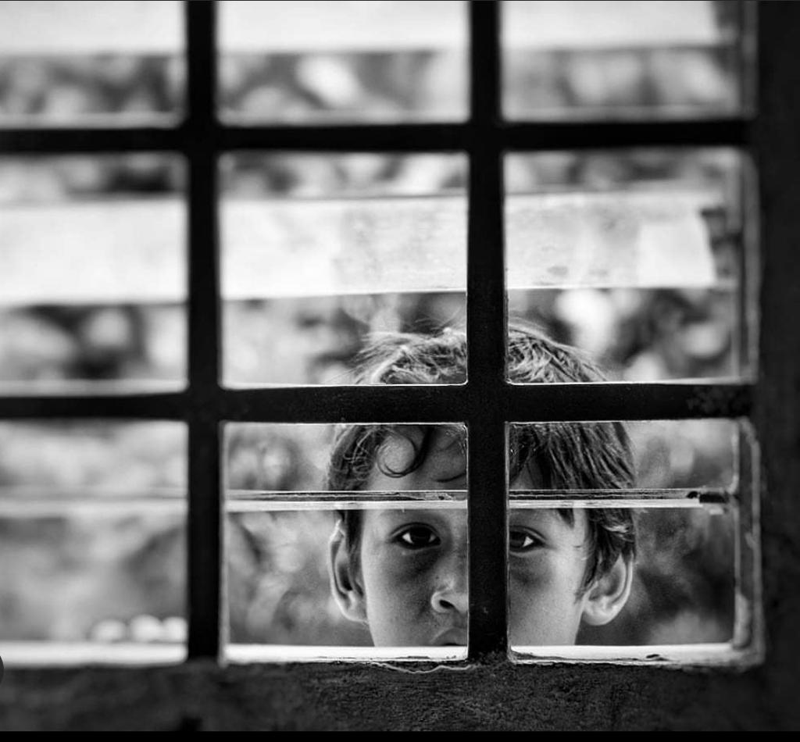
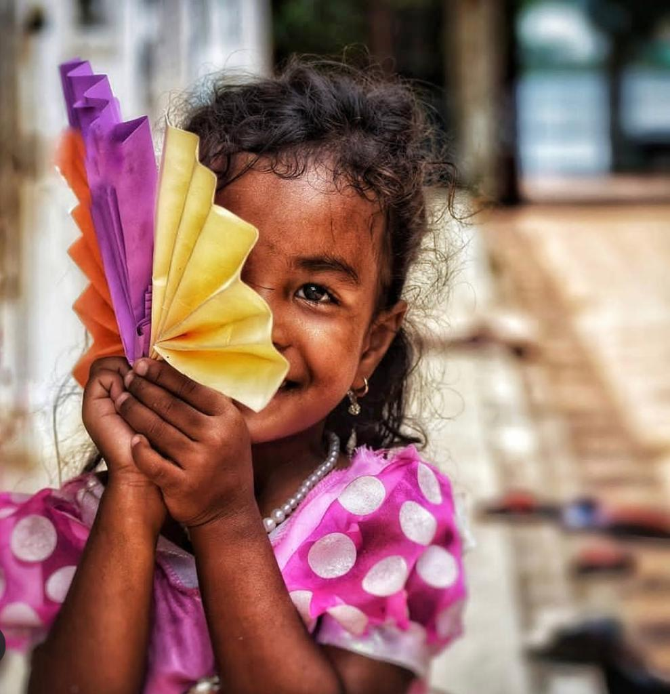
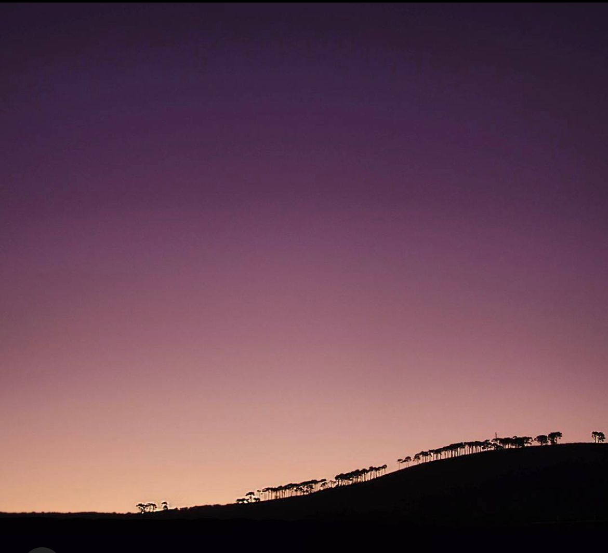

Photography
I love traveling, and I find photography as a way to capture memories. I started learning photography basics with my brother by helping him on his creative projects. I then started taking online photography classes to further my interest. After coming to Madison, I loved to take photographs at the Lakeshore path and of Lake Mendota. For me, photography allows me to convey messages that cannot be explained by words. I current use Nikon D5600 DSLR camera. since I prefer taking landscapes than figures. I, often, use Acrobat Lightroom to edit images for a trip to make them prettier!
Here are some of the pictures that I took:
    